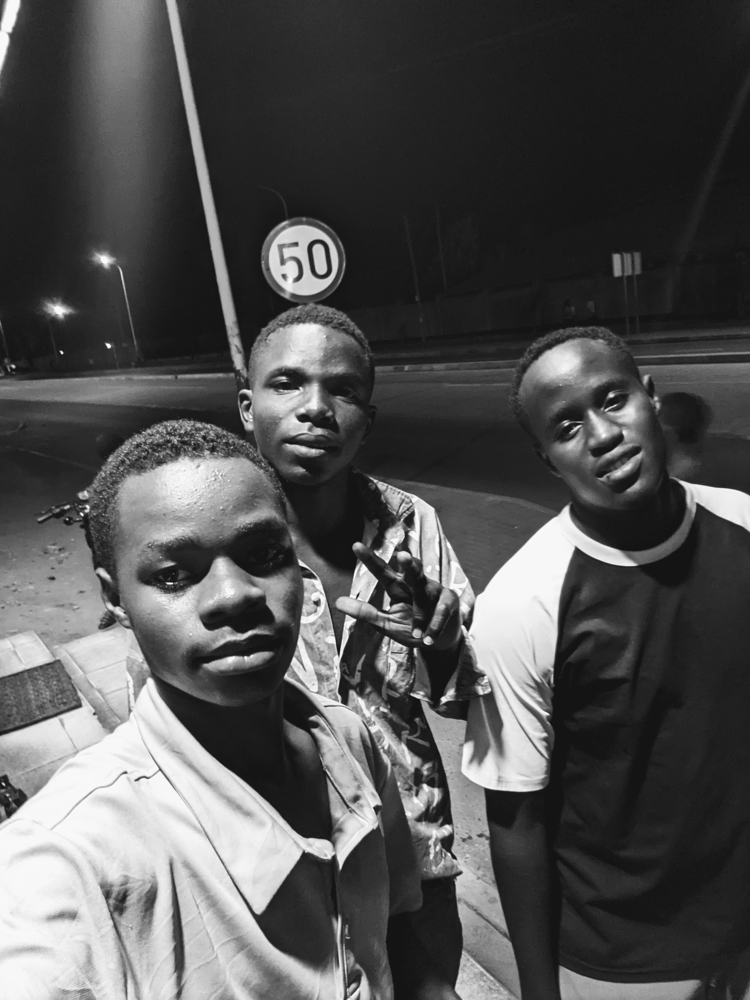
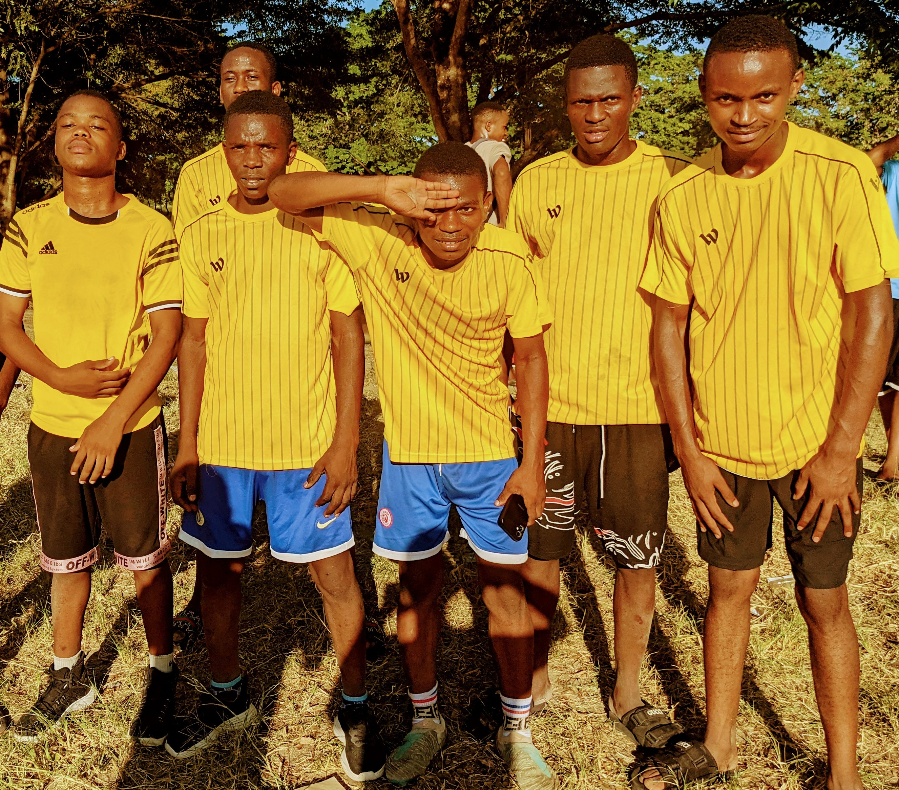

LUCAS TARIMO
Information
My name is Lucas Tarimo. I was born in the year 2003 at Kahama town. I started my primary education in 2012 at Kinaga Primary School and I finished in 2018. After that I went to Kinaga Secondary School where I studied from 2019 to 2022. Then I joined Shinyanga High School for my advanced level studies and I completed in 2025. Right now I am continuing with my studies at the University of Dar es Salaam.
Skills
Click any skill to see more details about it.
-
Computer Skills
I know how to use computers for different tasks. I can edit photos using tools like Canva, type documents in Microsoft Word, and I am also learning how to make websites using HTML and CSS.
-
Photo Editing and Word Processing
I can edit pictures for social media and create nice flyers and posters. I also know how to format documents properly so they look professional and clean.
-
Web Development
I am currently learning HTML, CSS, and JavaScript at the university. These are the main languages used for building websites. This portfolio page is one of my practice projects.
-
Sports
I enjoy playing football, boxing, and swimming. These activities help me stay fit and they keep my mind sharp. I usually play football with my friends during weekends.
Education Background
| EDUCATION LEVEL | SCHOOL / INSTITUTE | YEAR |
|---|---|---|
| Primary | Kinaga Primary School | 2012 - 2018 |
| Secondary | Kinaga Secondary School | 2019 - 2022 |
| A-Level | Shinyanga High School | 2023 - 2025 |
| University | University of Dar es Salaam | 2025 - Present |
Hobbies
-
Eating
I really enjoy eating good food. My favourite meals are ugali with beef stew, grilled fish from the lake, fresh fruits like mangoes and pineapples, and nicely cooked rice with beans. When I travel to new places I always like to try their local food because every region in Tanzania has its own special dishes.
-
Music
I love listening to music, especially Afrobeats and Bongo Fleva. The beats are always lively and the words talk about things that happen in our everyday life here in Africa. Some of my favourite artists are Diamond Platnumz, Harmonize, and Burna Boy. I listen to music when I am studying, relaxing, or travelling.
-
Football
Football is my number one sport. Every weekend I play with my friends in the neighbourhood. I usually play as a midfielder because I like both attacking and defending. Football teaches you teamwork and how to think quickly when things are moving fast. Those skills help me even in my studies and daily life.
Images
Click an image to see it in full size.


Favourite Links


Email Checker
Type an email address here and see if it is written correctly: